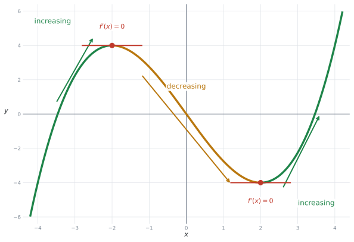
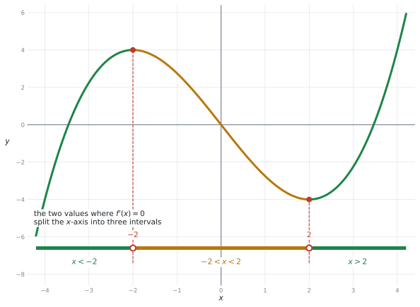
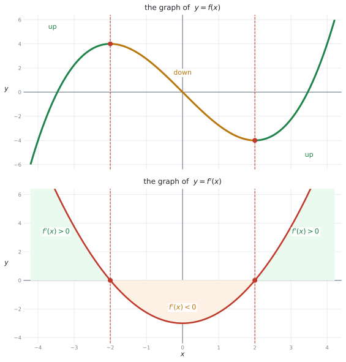
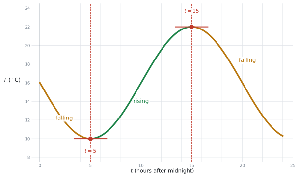
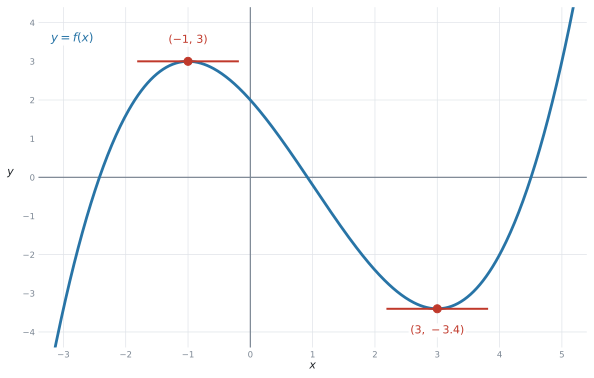

SL 5.2 — Increasing and decreasing functions（増加・減少と導関数の符号）
- increasing（増加）と decreasing（減少）の意味が、グラフで分かる。
- \(f'(x) > 0\)、\(f'(x) = 0\)、\(f'(x) < 0\) を、グラフの形と結びつけられる。
- 増加・減少する interval（区間）を、\(-2 < x < 2\) のような不等式で書ける。
- \(y = f(x)\) のグラフと \(y = f'(x)\) のグラフを見分けられる。
- \(f'(x)\) の式が与えられたとき、増加・減少する区間を求められる。
- 電卓で \(f'(x) = 0\) となる \(x\) を見つけられる。
- 文脈のあるグラフで、「増えている期間」「減っている期間」を答えられる。
公式集の Topic 5 の欄は 5.3、5.5、5.8 だけです。5.2 の欄はありません。
この項目で覚えることは、次の3行だけです。
\[ f'(x) > 0 \ \Rightarrow \ \text{increasing}, \qquad f'(x) = 0, \qquad f'(x) < 0 \ \Rightarrow \ \text{decreasing} \tag{1}\]
シラバスの Content 欄も、この3つを名指ししています。
Graphical interpretation of \(f'(x) > 0\), \(f'(x) = 0\), \(f'(x) < 0\).
The idea
SL 5.1 で、導関数は傾きの関数だと見ました。この項目は、その符号だけを使います。
1. increasing と decreasing
グラフを左から右へたどってください。
- 上がっていく → increasing（増加）
- 下がっていく → decreasing（減少）

上がっているところでは接線が右上がりなので、傾きは正です。下がっているところでは負です。
| グラフの形 | \(f'(x)\) | 英語 |
|---|---|---|
| 右上がり ↗ | \(f'(x) > 0\) | \(f\) is increasing |
| 水平 → | \(f'(x) = 0\) | — |
| 右下がり ↘ | \(f'(x) < 0\) | \(f\) is decreasing |
図 1 の左のほうで、グラフは \(x\) 軸の下にあります。\(y\) の値は負です。
それでも \(f\) は increasing です。 見るのは \(y\) の値ではなく、上がっているか下がっているかです。
\(y\) が負のまま増えていく、ということはふつうに起こります。\(-6 \to -4 \to -2\) は、増えています。
2. 答えは「区間」で書きます
シラバスの Guidance 欄が、答え方を指定しています。
Identifying intervals on which functions are increasing (\(f'(x) > 0\)) or decreasing (\(f'(x) < 0\)).
interval（区間）とは、\(x\) の値の範囲のことです。「\(x = 1\) で増加」ではなく、「\(x > 2\) の範囲で増加」のように答えます。

区間の区切りになるのは、\(f'(x) = 0\) となる \(x\) の値です。図 2 では \(x = -2\) と \(x = 2\) で、\(x\) 軸が \(3\) つに分かれています。
| 区間 | \(f'(x)\) | \(f\) は |
|---|---|---|
| \(x < -2\) | 正 | increasing |
| \(-2 < x < 2\) | 負 | decreasing |
| \(x > 2\) | 正 | increasing |
不等式の書き方
答えは、次の形で書きます。
- \(-2 < x < 2\) … \(-2\) と \(2\) のあいだ
- \(x < -2\) … \(-2\) より小さいところ全部
- \(x > 2\) … \(2\) より大きいところ全部
increasing なのは \(x < -2\) と \(x > 2\) の2か所です。これを
\[ -2 > x > 2 \qquad ✗ \]
と書いてしまう誤りが、とても多いところです。この不等式をみたす \(x\) は \(1\) つもありません（\(-2\) より小さくて、同時に \(2\) より大きい数はありません）。
正しくは、\(2\) つを並べて書きます。
\[ x < -2 \quad \textbf{and} \quad x > 2 \qquad ✓ \]
英語では and でも or でも通じますが、\(2\) つに分けて書くことが大事です。
\(-2 \le x \le 2\) と書いても、\(-2 < x < 2\) と書いても、IB ではふつう両方とも正解になります。
\(f'(-2) = 0\) なので、\(x = -2\) は「増加でも減少でもない」瞬間です。その \(1\) 点をどちらに入れるかは、答えの本質ではありません。
迷ったら、不等号にイコールを付けない（\(<\)）ほうを書いてください。
3. \(f\) のグラフと \(f'\) のグラフを見分ける
この項目で一番大事な区別です。試験では、どちらのグラフが与えられているのかを最初に確かめてください。
\(f'\) の右上の \('\) は、英語では prime（プライム）と読みます。日本の教室では「ダッシュ」と読むのがふつうですが、IB の授業と mark scheme では prime です。この本では「プライム」と書きます。

図 3 の上が \(y = f(x)\)、下が \(y = f'(x)\) です。同じ \(x\) の位置で見くらべてください。
| \(y = f(x)\) のグラフ（上） | \(y = f'(x)\) のグラフ（下） |
|---|---|
| 上がっている | \(x\) 軸より上にある |
| 水平になっている（\(x = \pm 2\)） | \(x\) 軸と交わる |
| 下がっている | \(x\) 軸より下にある |
下のグラフ（\(y = f'(x)\)）は、\(x = 0\) のあたりで上がり始めています。ですが、そこでの \(f\) は減少しています。
なぜなら、\(f'(x)\) の値そのものはまだ負（\(x\) 軸より下）だからです。
\(f'\) のグラフを見るときは、\(x\) 軸より上か下かだけを見てください。\(f'\) のグラフ自体の傾きは、AI SL では使いません。
The graph of y = f(x) is shown.→ \(f\) のグラフ。上がり下がりを見るThe graph of y = f'(x) is shown.→ \(f'\) のグラフ。\(x\) 軸の上下を見るThe derivative is given by f'(x) = ...→ 式が与えられている。符号を計算する
読み違えると、答えがちょうど逆になることがあります。問題文のプライム（\('\)）を見落とさないでください。
4. \(f'(x)\) の式が与えられたとき
\(f'(x)\) の式が与えられることもあります。このときは、\(f'(x) = 0\) を解いてから、符号を調べます。
たとえば \(f'(x) = (x + 1)(x - 4)\) なら、
- \(f'(x) = 0\) となるのは \(x = -1\) と \(x = 4\)
- \(x\) 軸が \(3\) つに分かれる：\(x < -1\)、\(-1 < x < 4\)、\(x > 4\)
- それぞれの区間から \(1\) つ値を選んで、\(f'\) に入れて符号を見る
| 区間 | 試す値 | \(f'\) の値 | 符号 |
|---|---|---|---|
| \(x < -1\) | \(x = -2\) | \((-1)(-6) = 6\) | 正 |
| \(-1 < x < 4\) | \(x = 0\) | \((1)(-4) = -4\) | 負 |
| \(x > 4\) | \(x = 5\) | \((6)(1) = 6\) | 正 |
答えは、\(x < -1\) と \(x > 4\) で increasing、\(-1 < x < 4\) で decreasing です。
\(x < -1\) の代わりに \(x = -100\) を入れても、符号は同じ正になります。計算が楽な値を選んでください。
\(0\) が使える区間では、\(0\) を選ぶのが一番速いです。
5. 文脈のあるグラフで読む
AI では、\(x\) と \(y\) ではなく時間と温度、時間と売上のようなグラフで聞かれます。やることは同じです。

図 4 は、ある日の気温です。\(t\) は真夜中からの時間（時間単位）です。
- \(0 \le t < 5\) … 下がっている（\(\dfrac{dT}{dt} < 0\)）
- \(t = 5\) … 一番低い（\(\dfrac{dT}{dt} = 0\)）
- \(5 < t < 15\) … 上がっている（\(\dfrac{dT}{dt} > 0\)）
- \(t = 15\) … 一番高い（\(\dfrac{dT}{dt} = 0\)）
- \(15 < t \le 24\) … 下がっている（\(\dfrac{dT}{dt} < 0\)）
この問題の \(t\) は \(0\) から \(24\) までしかありません。ですから答えも、\(0 \le t < 5\) のように範囲の中に収めて書きます。
\(t < 5\) とだけ書くと、\(t = -3\)（前の日）も含んでしまいます。問題文に for 0 ≤ t ≤ 24 と書かれていたら、その範囲を守ってください。
Why it works
なぜ \(f'(x) > 0\) が「増加」を意味するのかを説明します。
\(f'(x)\) は、その点での接線の傾きです（SL 5.1）。
傾きが正の直線は、右へ行くほど上がります。傾きが負の直線は、右へ行くほど下がります。これは SL 2.1 で見たとおりです。
曲線は、その点のまわりでは接線とほとんど同じです（拡大するとまっすぐに見える、というあの話です）。ですから、
- 接線が右上がり（\(f'(x) > 0\)）→ 曲線もそこで上がっている → increasing
- 接線が右下がり（\(f'(x) < 0\)）→ 曲線もそこで下がっている → decreasing
\(f'(x) = 0\) のときは接線が水平なので、その瞬間は上がってもいないし下がってもいません。増加から減少へ切り替わる場所（またはその逆）が、ここです。
だから、\(f'(x) = 0\) となる \(x\) の値が区間の区切りになります。
Worked examples
問題文は英語です。意味が理解できなかったら、問題文の下の「日本語訳」を開いてください。解説は日本語です。
例題 1 The graph of \(y = f(x)\) is shown below. The graph has a maximum point at \((-2, 4)\) and a minimum point at \((2, -4)\).
(a) Write down the two values of \(x\) for which \(f'(x) = 0\).
(b) State the interval on which \(f\) is decreasing.
(c) State the intervals on which \(f\) is increasing.
日本語訳
\(y = f(x)\) のグラフが上に示されています。グラフは \((-2, 4)\) で最大点、\((2, -4)\) で最小点をとります。
(a) \(f'(x) = 0\) となる \(x\) の値を \(2\) つ書きなさい。
(b) \(f\) が減少する区間を書きなさい。
(c) \(f\) が増加する区間を書きなさい。
(a) \(f'(x) = 0\) は、接線が水平になっているところです。それは山のてっぺんと谷の底です。
\[ x = -2 \quad \text{と} \quad x = 2 \]
(b) \(x = -2\) から \(x = 2\) のあいだで、グラフは下がっています。
\[ -2 < x < 2 \]
(c) 残りの \(2\) か所です。\(2\) つに分けて書きます。
\[ x < -2 \quad \text{と} \quad x > 2 \]
これはまとめて書けない形です。\(-2\) より小さくて、同時に \(2\) より大きい数は存在しません。
答案には \(x < -2\) and \(x > 2\) と、\(2\) つ並べて書いてください。
(a) \(x = -2\) and \(x = 2\)
(b) \(-2 < x < 2\)
(c) \(x < -2\) and \(x > 2\)
例題 2 The graph of \(y = f(x)\) is shown below.
(a) State whether \(f'(-3)\) is positive, negative or zero, giving a reason.
(b) State whether \(f'(0)\) is positive, negative or zero, giving a reason.
(c) The value \(a\) satisfies \(f'(a) = 0\) and \(a > 0\). Write down the value of \(a\).
日本語訳
\(y = f(x)\) のグラフが上に示されています。
(a) \(f'(-3)\) が正・負・\(0\) のどれかを、理由を付けて書きなさい。
(b) \(f'(0)\) が正・負・\(0\) のどれかを、理由を付けて書きなさい。
(c) 値 \(a\) は \(f'(a) = 0\) と \(a > 0\) をみたします。\(a\) の値を書きなさい。
(a) \(x = -3\) は \(x < -2\) の中にあります。そこでグラフは上がっています。
試験ではこう書く
Positive, because the graph is increasing at \(x = -3\).
(b) \(x = 0\) は \(-2 < x < 2\) の中にあります。そこでグラフは下がっています。
試験ではこう書く
Negative, because the graph is decreasing at \(x = 0\).
(c) \(f'(x) = 0\) となるのは \(x = -2\) と \(x = 2\) です。\(a > 0\) という条件があるので、
\[ a = 2 \]
(a) も (b) も、\(x\) の値をグラフの上で探して、\(-2\) と \(2\) のどちら側かを決めるだけです。
\(-3 < -2\) なので左の区間、\(-2 < 0 < 2\) なので真ん中の区間。それで符号が決まります。
(a) Positive, because the graph is increasing at \(x = -3\).
(b) Negative, because the graph is decreasing at \(x = 0\).
(c) \(a = 2\)
例題 3 The graph of \(y = f'(x)\) is shown in the lower part of the diagram below. It crosses the \(x\)-axis at \(x = -2\) and \(x = 2\).
(a) Write down the values of \(x\) for which \(f'(x) = 0\).
(b) State the interval on which \(f\) is decreasing.
(c) State whether \(f\) is increasing or decreasing at \(x = 3\), giving a reason.
日本語訳
\(y = f'(x)\) のグラフが上の図の下側に示されています。\(x = -2\) と \(x = 2\) で \(x\) 軸と交わっています。
(a) \(f'(x) = 0\) となる \(x\) の値を書きなさい。
(b) \(f\) が減少する区間を書きなさい。
(c) \(x = 3\) で \(f\) が増加しているか減少しているかを、理由を付けて書きなさい。
y = f'(x) とプライムが付いています。ですから見るのは「\(x\) 軸より上か下か」です。グラフ自体の上がり下がりは見ません。
(a) \(f'(x) = 0\) は、\(f'\) のグラフが \(x\) 軸と交わるところです。
\[ x = -2 \quad \text{と} \quad x = 2 \]
(b) \(f\) が減少するのは \(f'(x) < 0\) のとき、つまり \(f'\) のグラフが \(x\) 軸より下にあるところです。
図の下側で、放物線が軸より下にあるのは \(-2\) と \(2\) のあいだです。
\[ -2 < x < 2 \]
(c) \(x = 3\) のところで、\(f'\) のグラフは \(x\) 軸より上にあります。だから \(f'(3) > 0\) です。
試験ではこう書く
Increasing, because \(f'(3) > 0\) (the graph of \(f'\) is above the \(x\)-axis at \(x = 3\)).
\(x = 0\) のあたりで、\(f'\) のグラフは上がっています。ですが \(f'(0) < 0\) なので、\(f\) は減少しています。
\(f'\) のグラフを見るときに使うのは、\(x\) 軸の上か下かだけです。
(a) \(x = -2\) and \(x = 2\)
(b) \(-2 < x < 2\)
(c) Increasing, because \(f'(3) > 0\).
例題 4 The graph below shows the temperature \(T\ ^\circ\)C in a town, where \(t\) is the time in hours after midnight, for \(0 \le t \le 24\).
(a) Write down the value of \(t\) at which the temperature is lowest.
(b) State the interval of \(t\) for which the temperature is increasing.
(c) State the value of \(\dfrac{dT}{dt}\) when \(t = 15\).
(d) Interpret what \(\dfrac{dT}{dt} < 0\) means at \(t = 20\).
日本語訳
上のグラフは、ある町の気温 \(T\ ^\circ\)C を示しています。\(t\) は真夜中からの時間（時間単位）で、\(0 \le t \le 24\) です。
(a) 気温が一番低くなる \(t\) の値を書きなさい。
(b) 気温が上がっている \(t\) の区間を書きなさい。
(c) \(t = 15\) のときの \(\dfrac{dT}{dt}\) の値を書きなさい。
(d) \(t = 20\) で \(\dfrac{dT}{dt} < 0\) が何を意味するかを解釈しなさい。
(a) グラフの一番低いところは \(t = 5\) です。朝の \(5\) 時にあたります。
(b) \(t = 5\) から \(t = 15\) までのあいだ、グラフは上がっています。
\[ 5 < t < 15 \]
(c) \(t = 15\) はグラフの一番高いところで、接線が水平です。
\[ \frac{dT}{dt} = 0 \]
(d) Interpret なので、場面の言葉で書きます。
試験ではこう書く
At \(t = 20\) (that is, at 8 pm) the temperature is falling.
（\(t = 20\)、つまり夜の \(8\) 時に、気温は下がっています。）
\(t > 5\) だと、\(t = 20\) も入ってしまいます。ですが \(t = 20\) では気温は下がっています。
上がっているのは \(t = 15\) までです。必ず両側から挟んで \(5 < t < 15\) と書いてください。
(a) \(t = 5\)
(b) \(5 < t < 15\)
(c) \(\dfrac{dT}{dt} = 0\)
(d) At \(t = 20\) the temperature is falling.
例題 5 The function \(f\) is given by \(f(x) = x^{3} - 6x^{2} + 5\).
(a) Use your graphic display calculator to find the coordinates of the maximum point and the minimum point on the graph of \(y = f(x)\).
(b) Hence state the interval on which \(f\) is decreasing.
(c) State the intervals on which \(f\) is increasing.
日本語訳
関数 \(f\) が \(f(x) = x^{3} - 6x^{2} + 5\) で与えられています。
(a) 電卓を使って、\(y = f(x)\) のグラフの最大点と最小点の座標を求めなさい。
(b) これを使って、\(f\) が減少する区間を書きなさい。
(c) \(f\) が増加する区間を書きなさい。
(a) Graphs ページに \(f1(x) = x^{3} - 6x^{2} + 5\) を入れて、Analyze Graph を使います。
- Maximum … \((0, \ 5)\)
- Minimum … \((4, \ -27)\)
初期設定の画面（\(-10 \le y \le 10\)）では、最小点の \(y = -27\) が画面の外にあります。
menu → Window/Zoom → Window Settingsで \(y\) の範囲を \(-40\) から \(20\) くらいに広げると、両方が見えます。
(b) 最大点と最小点のあいだで、グラフは下がっています。\(x\) 座標だけを使います。
\[ 0 < x < 4 \]
(c) 残りの \(2\) か所です。
\[ x < 0 \quad \text{と} \quad x > 4 \]
最大点は \((0, 5)\) ですが、区間の答えに \(5\) は出てきません。区間は \(x\) の範囲だからです。
\(0 < y < 4\) や \(5 > x > -27\) のように書いてしまう誤りがあります。使うのは \(x\) 座標の \(0\) と \(4\) だけです。
(a) Maximum point \((0, 5)\); minimum point \((4, -27)\)
(b) \(0 < x < 4\)
(c) \(x < 0\) and \(x > 4\)
Common errors
\(x < -2\) と \(x > 2\) を、\(-2 > x > 2\) と書いてしまう誤りです。
この不等式をみたす \(x\) は存在しません。 「\(-2\) より小さくて、同時に \(2\) より大きい数」はないからです。
\(2\) つに分けて、and でつないで書いてください。
グラフが \(x\) 軸の下にあっても、上がっていれば increasing です。
見るのは上がっているか下がっているかであって、\(y\) が正か負かではありません。
\(-6 \to -4 \to -2\) は増えています。マイナスの数でも、増えます。
問題文の \(f(x)\) と \(f'(x)\) は、プライム \(1\) つの違いです。読み飛ばすと、答えが逆になります。
- \(f\) のグラフ → 上がり下がりを見る
- \(f'\) のグラフ → \(x\) 軸の上か下かを見る
問題文を読んだら、まず「どちらのグラフか」を紙に書き留めてから解き始めてください。
\(f'\) のグラフが上がっていても、それは「\(f\) が増加している」という意味ではありません。
\(f'\) のグラフが軸より下にあるなら、\(f'(x) < 0\) なので \(f\) は減少しています。\(f'\) のグラフが上がっていようが下がっていようが、関係ありません。
最大点が \((0, 5)\) のとき、区間の答えに \(5\) は出てきません。
区間は \(x\) の範囲です。使うのは \(x\) 座標だけです。
for 0 ≤ t ≤ 24 と書かれているのに \(t > 5\) と答えると、\(t = 30\)（翌日）まで含んでしまいます。
上限も下限も、問題文の範囲に収めてください。 \(5 < t < 15\) のように、両側から挟みます。
State the interval on which f is increasing は、範囲を聞いています。
\(x = 3\) のように \(1\) つの値だけを書くと、点になりません。不等式で書いてください。
\(x = -2\) を含めるかどうかで悩む必要はありません。\(-2 < x < 2\) と書けば十分です。
IB の採点では、\(\le\) でも \(<\) でもどちらも正解になります。そこで時間を使わないでください。
最小点が \(y = -27\) にあるのに、画面が \(-10 \le y \le 10\) のままだと、その点はそもそも画面に出てきません。
グラフをかいたら、まず全体が見えているかを確かめてください。見えていなければ、Window Settings で範囲を広げます。
Using your GDC (TI-Nspire CX II)
この項目では、電卓は停留点（\(f'(x) = 0\) となる点）を見つけるために使います。
1. グラフをかいて、全体を見る
Graphs ページで \(f1(x)\) に式を入れます。
menu → Window/Zoom → Zoom - FitZoom - Fit は、\(y\) の範囲を自動で合わせてくれます。これで山と谷が画面に入ります。
うまくいかないときは、手で設定します。
menu → Window/Zoom → Window Settings2. 最大点・最小点を出す
menu → 6: Analyze Graph → 3: Maximum
menu → 6: Analyze Graph → 2: Minimum操作は SL 2.4 と同じです。下限（lower bound）と上限（upper bound）を、その点をはさむように指定します。 enter は \(2\) 回です。
Analyze Graph は、指定した範囲の中の \(1\) つしか返しません。
最大点を探しているのに範囲が広すぎると、思ったものが出てきません。山だけをはさむように、狭く指定してください。
3. 出てくるのは座標です
Maximum は \((0, 5)\) のように座標を返します。区間に使うのは \(x\) 座標だけです。
\(y\) 座標は、この項目では使いません（SL 5.6 の最大値・最小値では使います）。
4. \(f'(x) = 0\) を直接解く方法もあります
\(f'(x)\) の式が分かっているなら、nSolve で解けます。
nSolve(3x² - 12x = 0, x)ただし nSolve は解を \(1\) つずつしか返しません。\(2\) つあるときは、探す範囲を変えて \(2\) 回使います。
nSolve(3x² - 12x = 0, x, -1, 1)
nSolve(3x² - 12x = 0, x, 2, 6)\(f'(x)\) の式を作るのは SL 5.3 からです。この項目では、\(f\) のグラフをかいて山と谷を見つけるほうが、手数が少なくて済みます。
5. グラフを見て、答えを言葉にする
電卓が返すのは座標だけです。「\(0 < x < 4\) で decreasing」という答えは、自分で書きます。
画面を見ながら、山から谷までが下り、それ以外が上り、と確かめてください。
Exercises
各問題に、折りたたみが3つ付いています。日本語訳、解答例（答案用紙に書くべきこと。英語です）、解説（なぜそうなるか。日本語です）。
まず自分で解いて、次に解答例と見くらべてください。解説は、合わなかったときだけ開けば十分です。

1 The graph of \(y = f(x)\) is shown in 図 9. It has a maximum point at \((-1, 3)\) and a minimum point at \((3, -3.4)\).
(a) Write down the values of \(x\) for which \(f'(x) = 0\).
(b) State the interval on which \(f\) is decreasing.
(c) State the intervals on which \(f\) is increasing.
日本語訳
\(y = f(x)\) のグラフが 図 9 に示されています。\((-1, 3)\) で最大点、\((3, -3.4)\) で最小点をとります。
(a) \(f'(x) = 0\) となる \(x\) の値を書きなさい。
(b) \(f\) が減少する区間を書きなさい。
(c) \(f\) が増加する区間を書きなさい。
(a) \(x = -1\) and \(x = 3\)
(b) \(-1 < x < 3\)
(c) \(x < -1\) and \(x > 3\)
接線が水平になっているのは、山のてっぺん \((-1,3)\) と谷の底 \((3,-3.4)\) です。使うのは \(x\) 座標だけなので、\(-1\) と \(3\) です。
(c) は \(2\) つに分けて書いてください。\(-1 > x > 3\) は存在しない範囲です。
\(3\) や \(-3.4\) という \(y\) 座標は、答えには出てきません。
2 For the graph in 図 9, state whether each of the following is positive, negative or zero.
(a) \(f'(-3)\)
(b) \(f'(0)\)
(c) \(f'(3)\)
(d) \(f'(5)\)
日本語訳
図 9 のグラフについて、次のそれぞれが正・負・\(0\) のどれかを書きなさい。
(a) Positive
(b) Negative
(c) Zero
(d) Positive
\(x\) の値が、\(-1\) と \(3\) で区切られたどの区間に入るかを見ます。
- \(-3 < -1\) → 左の区間 → 上がっている → 正
- \(-1 < 0 < 3\) → 真ん中 → 下がっている → 負
- \(x = 3\) → ちょうど谷の底 → 水平 → \(0\)
- \(5 > 3\) → 右の区間 → 上がっている → 正
(c) で「負」と答えてしまう人が多いところです。\(x = 3\) は境目そのものなので \(0\) です。
3 A function \(f\) has derivative \(f'(x) = 2x - 4\).
(a) Find the value of \(x\) for which \(f'(x) = 0\).
(b) State the interval on which \(f\) is decreasing.
(c) State the interval on which \(f\) is increasing.
日本語訳
ある関数 \(f\) の導関数は \(f'(x) = 2x - 4\) です。
(a) \(f'(x) = 0\) となる \(x\) の値を求めなさい。
(b) \(f\) が減少する区間を書きなさい。
(c) \(f\) が増加する区間を書きなさい。
(a) \(2x - 4 = 0\), so \(x = 2\)
(b) \(x < 2\)
(c) \(x > 2\)
\(f'(x) = 2x - 4\) は直線で、傾きが正なので右上がりです。\(x = 2\) で \(x\) 軸を横切ります。
- \(x < 2\) … \(f'\) は負（試しに \(x=0\) で \(f'(0) = -4\)）→ \(f\) は減少
- \(x > 2\) … \(f'\) は正（試しに \(x=3\) で \(f'(3) = 2\)）→ \(f\) は増加
区間は \(2\) つだけで、分けて書く必要はありません。
4 A function \(f\) has derivative \(f'(x) = (x + 1)(x - 4)\).
(a) Write down the values of \(x\) for which \(f'(x) = 0\).
(b) State the interval on which \(f\) is decreasing.
(c) State the intervals on which \(f\) is increasing.
日本語訳
ある関数 \(f\) の導関数は \(f'(x) = (x + 1)(x - 4)\) です。
(a) \(f'(x) = 0\) となる \(x\) の値を書きなさい。
(b) \(f\) が減少する区間を書きなさい。
(c) \(f\) が増加する区間を書きなさい。
(a) \(x = -1\) and \(x = 4\)
(b) \(f'(0) = (1)(-4) = -4 < 0\), so \(f\) is decreasing for \(-1 < x < 4\)
(c) \(f'(-2) = (-1)(-6) = 6 > 0\) and \(f'(5) = (6)(1) = 6 > 0\),
so \(f\) is increasing for \(x < -1\) and \(x > 4\)
すでに因数分解されているので、\(f'(x) = 0\) はカッコの中を \(0\) にする値です。\(x = -1\) と \(x = 4\)。
そのあとは区間ごとに値を入れて符号を調べます。\(0\) が使える区間では \(0\) を選ぶのが一番速いです。
答案に、試した値と符号を書いておくと、根拠が残ります。
5 A function \(f\) has derivative \(f'(x) = -(x - 1)(x - 5)\).
(a) Write down the values of \(x\) for which \(f'(x) = 0\).
(b) State the interval on which \(f\) is increasing.
(c) State the intervals on which \(f\) is decreasing.
日本語訳
ある関数 \(f\) の導関数は \(f'(x) = -(x - 1)(x - 5)\) です。
(a) \(f'(x) = 0\) となる \(x\) の値を書きなさい。
(b) \(f\) が増加する区間を書きなさい。
(c) \(f\) が減少する区間を書きなさい。
(a) \(x = 1\) and \(x = 5\)
(b) \(f'(3) = -(2)(-2) = 4 > 0\), so \(f\) is increasing for \(1 < x < 5\)
(c) \(f'(0) = -(-1)(-5) = -5 < 0\) and \(f'(6) = -(5)(1) = -5 < 0\),
so \(f\) is decreasing for \(x < 1\) and \(x > 5\)
前にマイナスが付いていることに気をつけてください。 演習4とは、増加と減少がちょうど逆になります。
\(f'(x) = -(x-1)(x-5)\) は上に凸の放物線なので、真ん中で正、外側で負です。
符号を確かめずに演習4と同じ形で答えると、まるごと間違えます。必ず値を入れて確かめてください。
6 The function \(f\) is given by \(f(x) = x^{3} - 3x^{2} - 9x + 5\).
(a) Use your graphic display calculator to find the coordinates of the maximum point and the minimum point on the graph of \(y = f(x)\).
(b) State the interval on which \(f\) is decreasing.
(c) State the intervals on which \(f\) is increasing.
日本語訳
関数 \(f\) が \(f(x) = x^{3} - 3x^{2} - 9x + 5\) で与えられています。
(a) 電卓を使って、\(y = f(x)\) のグラフの最大点と最小点の座標を求めなさい。
(b) \(f\) が減少する区間を書きなさい。
(c) \(f\) が増加する区間を書きなさい。
(a) Maximum point \((-1, 10)\); minimum point \((3, -22)\)
(b) \(-1 < x < 3\)
(c) \(x < -1\) and \(x > 3\)
\(y\) の範囲が \(-22\) から \(10\) まであるので、初期設定の画面（\(-10 \le y \le 10\)）では最小点が見えません。
Zoom - Fit を使うか、Window Settings で \(y\) を \(-30\) から \(20\) くらいにしてください。
確かめ：\(f(-1) = -1 - 3 + 9 + 5 = 10\) ✓ \(f(3) = 27 - 27 - 27 + 5 = -22\) ✓
7 The function \(f\) is given by \(f(x) = x^{3} + 2x\).
(a) Sketch the graph of \(y = f(x)\) using your graphic display calculator.
(b) State whether there are any values of \(x\) for which \(f\) is decreasing, giving a reason.
日本語訳
関数 \(f\) が \(f(x) = x^{3} + 2x\) で与えられています。
(a) 電卓を使って \(y = f(x)\) のグラフの概形をかきなさい。
(b) \(f\) が減少する \(x\) の値があるかどうかを、理由を付けて書きなさい。
(a) A curve through the origin, increasing from bottom left to top right, with no maximum or minimum point.
(b) No. The graph is increasing everywhere, so there are no values of \(x\) for which \(f\) is decreasing.
グラフをかくと、山も谷もありません。 ずっと右上がりです。
\(f'(x) = 0\) となる \(x\) がないので、区間の区切りもありません。だから、全部の \(x\) で増加です。
このような関数は、英語で increasing for all values of x と言います。「減少する区間はない」という答えも、立派な答えです。
8 The number of visitors to a museum each month is recorded. The number rises from January to May, falls from May to August, and rises again from August to December.
Let \(V\) be the number of visitors and let \(m\) be the month number, where \(m = 1\) is January.
(a) State the interval of \(m\) for which \(\dfrac{dV}{dm}\) is negative.
(b) Write down the two values of \(m\) at which \(\dfrac{dV}{dm} = 0\).
日本語訳
博物館の毎月の来館者数を記録しています。来館者数は \(1\) 月から \(5\) 月まで増え、\(5\) 月から \(8\) 月まで減り、\(8\) 月から \(12\) 月まで再び増えます。
\(V\) を来館者数、\(m\) を月の番号（\(m = 1\) が \(1\) 月）とします。
(a) \(\dfrac{dV}{dm}\) が負になる \(m\) の区間を書きなさい。
(b) \(\dfrac{dV}{dm} = 0\) となる \(m\) の値を \(2\) つ書きなさい。
(a) \(5 < m < 8\)
(b) \(m = 5\) and \(m = 8\)
グラフがなくても、文章がそのまま増減を教えてくれています。
- \(1\) 月 → \(5\) 月：増える → \(\dfrac{dV}{dm} > 0\)
- \(5\) 月 → \(8\) 月：減る → \(\dfrac{dV}{dm} < 0\)
- \(8\) 月 → \(12\) 月：増える → \(\dfrac{dV}{dm} > 0\)
(b) 増加から減少へ、減少から増加へ切り替わるところが、\(\dfrac{dV}{dm} = 0\) です。\(m = 5\)（\(5\) 月）と \(m = 8\)（\(8\) 月）です。
9 A student is asked to state the intervals on which a function \(f\) is increasing. The correct answer is \(x < 1\) and \(x > 6\). The student writes \(1 > x > 6\).
Explain why the student’s answer cannot be correct.
日本語訳
ある生徒が、関数 \(f\) が増加する区間を答えるよう求められました。正しい答えは \(x < 1\) と \(x > 6\) です。生徒は \(1 > x > 6\) と書きました。
生徒の答えが正しくありえない理由を説明しなさい。
The statement \(1 > x > 6\) means that \(x\) is less than \(1\) and greater than \(6\) at the same time. No number can satisfy both, so the statement describes no values of \(x\) at all. The two intervals are separate and must be written separately.
\(1 > x > 6\) を分けて読むと、\(x < 1\) かつ \(x > 6\) です。そんな数はありません。
\(-2 > x > 2\) や \(1 > x > 6\) のような書き方は、この項目で一番多い誤りです。
離れた \(2\) つの区間は、必ず \(2\) つに分けて書きます。
10 A company’s monthly profit is \(P\) thousand dollars, \(t\) months after it opened. It is known that \(\dfrac{dP}{dt} > 0\) for \(0 < t < 18\) and \(\dfrac{dP}{dt} < 0\) for \(t > 18\).
(a) State the value of \(t\) at which \(\dfrac{dP}{dt} = 0\).
(b) Interpret what happens to the monthly profit after \(t = 18\).
(c) State whether the monthly profit at \(t = 24\) is greater or smaller than at \(t = 18\), giving a reason.
日本語訳
ある会社の月ごとの利益は、開業から \(t\) か月後に \(P\) 千ドルです。\(0 < t < 18\) では \(\dfrac{dP}{dt} > 0\)、\(t > 18\) では \(\dfrac{dP}{dt} < 0\) であることが分かっています。
(a) \(\dfrac{dP}{dt} = 0\) となる \(t\) の値を書きなさい。
(b) \(t = 18\) より後、月ごとの利益に何が起こるかを解釈しなさい。
(c) \(t = 24\) での月ごとの利益が \(t = 18\) でのそれより大きいか小さいかを、理由を付けて書きなさい。
(a) \(t = 18\)
(b) After \(18\) months the monthly profit starts to fall.
(c) Smaller, because the profit is decreasing for all \(t > 18\), so it has been falling for the six months from \(t = 18\) to \(t = 24\).
(a) 増加から減少へ切り替わるところが \(\dfrac{dP}{dt} = 0\) です。\(t = 18\) です。
(b) は Interpret なので、場面の言葉で書きます。「導関数が負になる」ではなく「利益が下がり始める」です。
(c) \(t = 18\) から \(t = 24\) までずっと減少しているので、\(t=24\) のほうが小さいです。giving a reason なので、「\(t > 18\) で減少しているから」の一言を添えてください。
この問題にはグラフも式もありません。 導関数の符号だけで、これだけのことが言えます。
11 The depth of water in a harbour is \(d\) metres, \(t\) hours after midnight. The table shows the depth every two hours.
| \(t\) (hours) | \(0\) | \(2\) | \(4\) | \(6\) | \(8\) | \(10\) | \(12\) |
|---|---|---|---|---|---|---|---|
| \(d\) (metres) | \(5.3\) | \(7.7\) | \(8.9\) | \(7.7\) | \(5.3\) | \(4.1\) | \(5.3\) |
(a) State the interval of \(t\) for which the depth is decreasing.
(b) Write down the two values of \(t\) at which \(\dfrac{dd}{dt} = 0\).
(c) Use the values at \(t = 0\) and \(t = 4\) to estimate \(\dfrac{dd}{dt}\) when \(t = 2\).
(d) Interpret your answer to part (c) in the context of the question.
日本語訳
港の水深は、真夜中から \(t\) 時間後に \(d\) m です。表は \(2\) 時間ごとの水深です。
(a) 水深が減少している \(t\) の区間を書きなさい。
(b) \(\dfrac{dd}{dt} = 0\) となる \(t\) の値を \(2\) つ書きなさい。
(c) \(t = 0\) と \(t = 4\) の値を使って、\(t = 2\) のときの \(\dfrac{dd}{dt}\) を見積もりなさい。
(d) (c) の答えを、問題の文脈で解釈しなさい。
(a) \(4 < t < 10\)
(b) \(t = 4\) and \(t = 10\)
(c) \(\dfrac{dd}{dt} \approx \dfrac{8.9 - 5.3}{4 - 0} = \dfrac{3.6}{4} = 0.9\) metres per hour
(d) Two hours after midnight, the depth of water in the harbour is increasing at about \(0.9\) metres per hour.
(a) 表の数を左から追ってください。\(5.3 \to 7.7 \to 8.9\) で増え、\(8.9 \to 7.7 \to 5.3 \to 4.1\) で減り、\(4.1 \to 5.3\) でまた増えます。減っているのは \(t = 4\) から \(t = 10\) までです。
(b) 一番高い \(t = 4\) と、一番低い \(t = 10\) が切り替わりの点です。
(c) は SL 5.1 の弦の傾きです。知りたい \(t = 2\) を、\(t = 0\) と \(t = 4\) ではさんでいます ✓
(d) 増えているので正の値です。increasing を入れてください。単位も忘れずに。